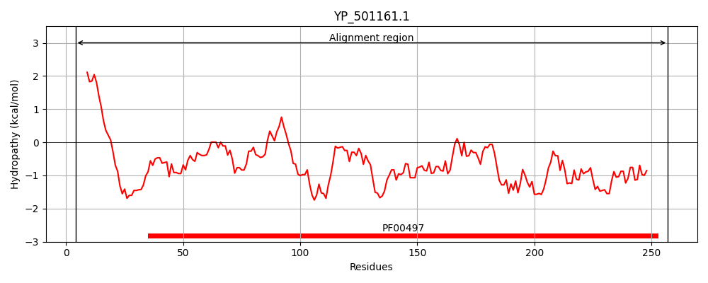
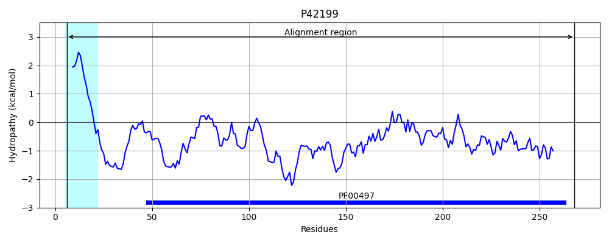
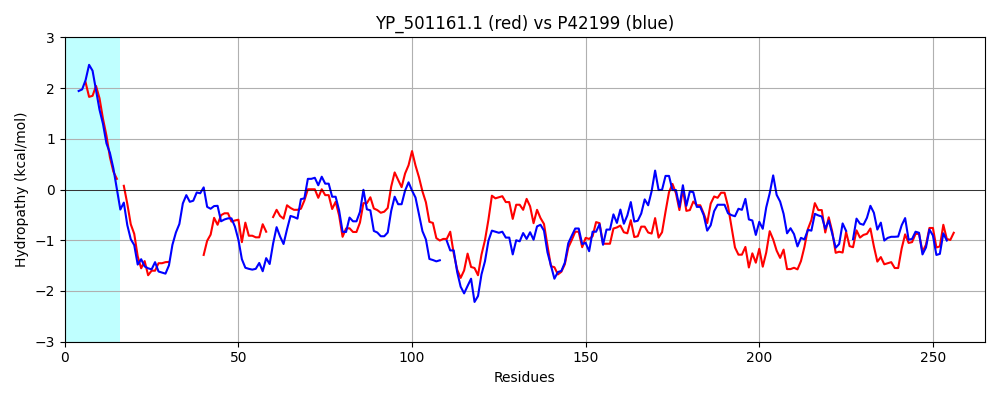

Hit Accession: P42199
Hit TCID: 3.A.1.3.14
Hit Description: gnl|BL_ORD_ID|10445 gnl|TC-DB|P42199|3.A.1.3.14 Probable amino-acid ABC transporter extracellular binding protein yckK precursor - Bacillus subtilis.
Mach Len: 265
e:0.000000
Query TMS Count : 0
Hit TMS Count: 1
TMS-Overlap Score: 0.000000
Predicted Substrates:CHEBI:4052;cystine
BLAST Alignment:
Score: 596 , Bit scores: 234 bits, E-value: 4.1e-77, Alignment length: 265, Percentage identity: 48
Query: 4 LLFVMIAFVFILAACG-NNSSKDKEASKDSK---------TINVGTEGTYAPFSFHDKD-GKLTGYDIDVIKAVAKEEGLKLKFNETSWDSMFAGLDAGRFDVIANQVGINPDREKKYKFSKPYTFSSAVLVIRENEKDIKDFDDVKGKKLAQTFTSNYGKLAKDKGADITKVDGFNQSMDLLLSKRVDGTFNDSLSYLDYKKQKPNAKIKAIKGNAEQSRSAFAFSKKADDETVQKFNDGLKKIEENGELAKIGKKWFGQDVSK 257
L M+ + LAACG N ++ K+ +KD + VGTEGTY PF++HDKD KLTGYD++VI VAK GLK+ F ET WDSMFAGL++ RFDV+ANQVG DRE KY FS YT S AV+V +++ DIK DVKGK AQ+ TSNY KLA + GA + V+G Q++ ++ RVD T+ND L+ L+Y K N +K E + F F +K E V + N LK+++E+G L+KI KKWFG+DVSK
Sbjct: 6 LALFMVVSIAALAACGAGNDNQSKDNAKDGDLWASIKKKGVLTVGTEGTYEPFTYHDKDTDKLTGYDVEVITEVAKRLGLKVDFKETQWDSMFAGLNSKRFDVVANQVG-KTDREDKYDFSDKYTTSRAVVVTKKDNNDIKSEADVKGKTSAQSLTSNYNKLATNAGAKVEGVEGMAQALQMIQQGRVDMTYNDKLAVLNYLKTSGNKNVKIAFETGEPQSTYFTF-RKGSGEVVDQVNKALKEMKEDGTLSKISKKWFGEDVSK 268 | Protein Hydropathy Plots: |
|---|
|  |  |
Pairwise Alignment-Hydropathy Plot:
|
|---|
|  |